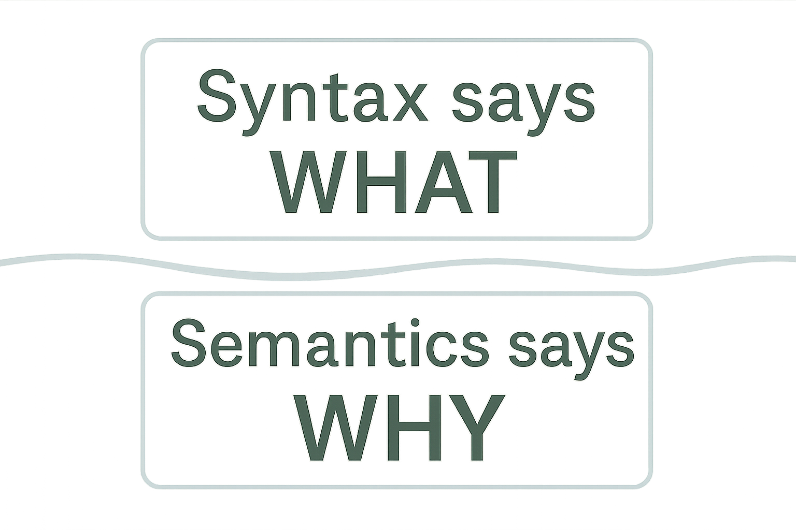

Why Semantic Docstrings
1. Syntax and Semantics

Traditional Python docstrings often repeat what the signature or type hints show. They explain what a function does, but not why or how to use it.
- Syntax shows structure: arguments, types, returns.
- Semantics show purpose: responsibility, context, intention.
For example, type hints show a function takes a User and a Decimal, returning a Decimal.
They don’t explain why these inputs matter or what constraints apply. Semantic docstrings fill that gap.
2. Benefits for Developers
Semantic docstrings improve workflows by:
- Speeding onboarding with clear roles and responsibilities.
- Shifting code reviews to focus on intent, not just code style.
- Making refactoring safer by preserving original purpose.
- Reducing the need for separate design docs, keeping knowledge close to code.
3. Benefits for LLMs and Code Assistants
Semantic docstrings boost AI-assisted development:
- Provide context and purpose before implementation details.
- Reduce ambiguity and incorrect assumptions.
- Improve code completions aligned with architectural intent.
- Increase information density, optimizing AI context windows.
4. Documentation Quality Threshold
Documentation impact on AI is not linear:
- High-quality docs improve accuracy by 20–50%.
- Poor or misleading docs hurt performance more than no docs, sometimes over 60%.
Focus on accuracy and clarity over quantity. Better to document fewer functions well than many poorly.
5. Principles of Semantic Docstrings

Key principles:
- Responsibility: Define clear responsibilities.
- Context: Explain origin, meaning, constraints of inputs and outputs.
- Boundaries: State what the component does not do.
- Role: Clarify the system role of classes and modules.
These ensure docs capture architectural and semantic meaning, not just code details.
6. Why Now?
AI-assisted development demands clear documentation.
- Benchmarks like HumanEval rely on natural language clarity.
- Semantic docstrings create a shared layer for humans and AI.
- They enable reasoning about why code exists, not just how.
Adopting semantic docstrings improves readability and preps code for AI collaboration.